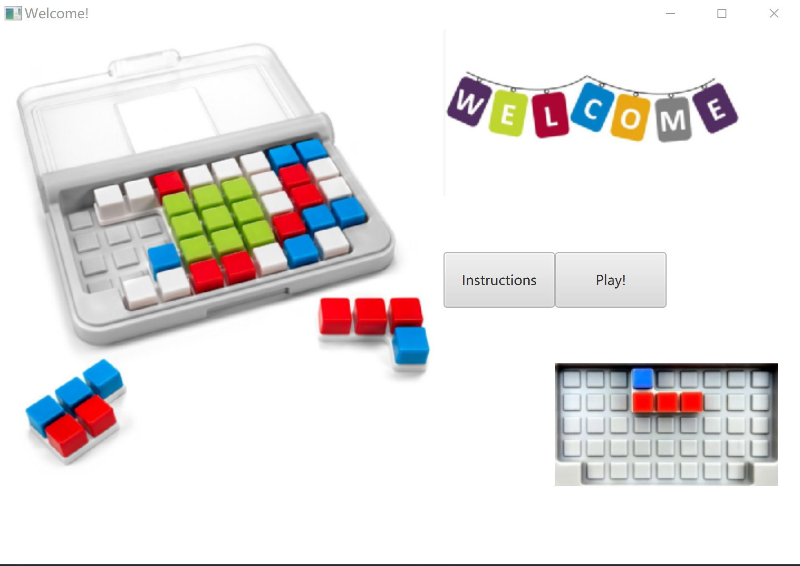

IQ-focus game
Group assignment of COMP1110(Structured Programming) - 2019 S2
Users can play this game with multiple functions easily.
Developed with test-driven strategies.
Implemented some algorithms to increase the complexity of IQ-focus game.
Each situation is provided with the corresponding solution.
Graded 21.5/25.
[Full code]
This link contains all material of IQ-focus game.
